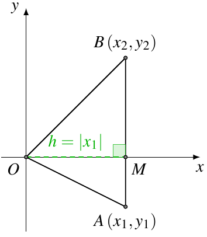
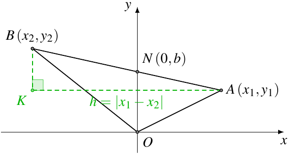
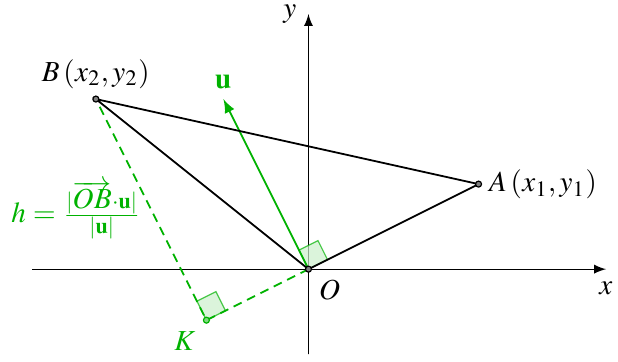

在平面直角坐标系 Oxy 中，设点 A(x1,y1)，B(x2,y2)，则
S△OAB=21det[x1x2y1y2]=21∣x1y2−x2y1∣.
这个公式的证明有很多，所需要的预备知识也不尽相同．
下面按照所用到的知识的难度，有浅到深，给出几种不同的证明方法．
1. 初中的证明方法
本质上，这种方法就是割补法．
若 AB⊥x 轴，如图1，

则 x1=x2，直线 AB 与 x 轴的交点为 M(x1,0)，所以
S△OAB=21∣AB∣⋅∣OM∣=21∣y1−y2∣⋅∣x1∣=21∣x1y2−x2y1∣.
若 AB⊥x 轴，如图2，

设直线 AB 与 y 轴的交点为 N(0,b)，则
S△OAB=21∣ON∣⋅∣x1−x2∣=21∣b∣⋅∣x1−x2∣.(i)
设直线 AB 的解析式为 y=kx+b，则
{kx1+b=y1kx2+b=y2
解得
⎩⎨⎧k=x1−x2y1−y2b=x1−x2x1y2−x2y1
所以
S△OAB=21x1−x2x1y2−x2y1⋅∣x1−x2∣=21∣x1y2−x2y1∣.
当 N 点不在线段 AB 上的时候，(i) 式依然是成立的，所以结论不变．
2. 高中的证明方法
2.1. 利用向量的投影
这种方法是利用向量的投影，来求出三角形的高．
如图3，

向量 u=(−y1,x1) 是由 OA=(x1,y1) 逆时针旋转 90∘ 得到的向量，所以 OA 边上的高为 h=∣u∣OB⋅u，
所以
S△OAB=21∣OA∣⋅∣u∣OB⋅u=21OB⋅u=21∣x1y2−x2y1∣.
2.2. 利用向量的夹角
直接利用向量的点积，求出三角形的角．
S△OAB=21∣OA∣⋅∣OB∣⋅sin∠AOB=21∣OA∣⋅∣OB∣⋅1−cos2∠AOB=21OA⋅OB⋅1−OA⋅OBOA⋅OB2=21(OA⋅OB)2−(OA⋅OB)2
将坐标带入，可得
S△OAB=21(x12+y12)(x22+y22)−(x1x2+y1y2)2=21x12y22+x22y12−2x1x2y1y2=21(x1y2−x2y1)2=21∣x1y2−x2y1∣
3. 大学的证明方法
利用向量的叉积或者混合积的几何意义，可以很容易地得到我们所需要的公式．
3.1. 利用向量的叉积
考虑空间坐标系 Oxyz，OA=(x1,y1,0)，OB=(x2,y2,0)，则
S△OAB=21∣OA∣⋅∣OB∣⋅sin∠AOB=21OA×OB=21ix1x2jy1y2k00=21x1x2y1y2k=21∣x1y2−x2y1∣.
3.2. 利用向量的混合积
我们把三个点都放到平面 z=1 上，设 P(0,0,1)，A(x1,y1,1)，B(x2,y2,1)，则
S△PAB=3VO−PAB=3⋅61OP⋅(OA×OB)=21det0x1x20y1y2111=21det[x1x2y1y2].
4. 推广
对于一般的 △ABC，设点 A(x1,y1)，B(x2,y2)，C(x3,y3)，则
ABAC=(x2−x1,y2−y1),=(x3−x1,y3−y1),
所以
S△ABC=21det[x2−x1x3−x1y2−y1y3−y1].
这种方法相当于把 △ABC 沿向量 AO 平移到了原点．
或者考虑空间坐标系 Oxyz，把三个点都放到平面 z=1 上，设点 A(x1,y1,1)，B(x2,y2,1)，C(x3,y3,1)，则
S△ABC=3VO−ABC=3⋅61OA⋅(OB×OC)=21detx1x2x3y1y2y3111.
由行列式的性质可知，这两个式子是等价的．